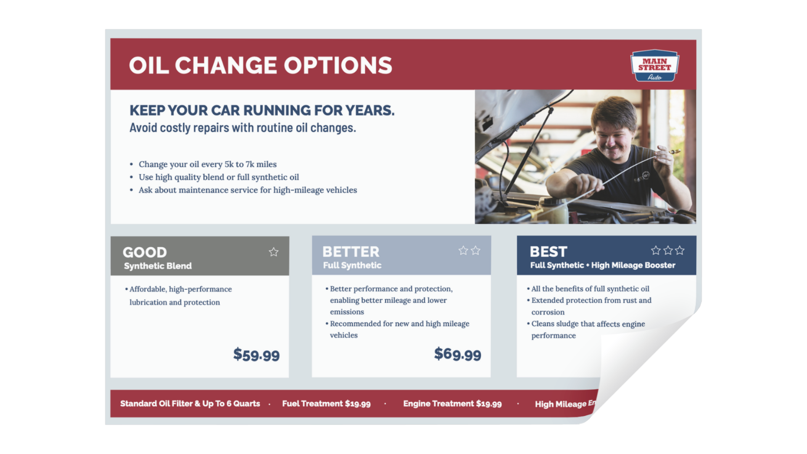

01 / Social content & brand creative
Main Street
Auto.
Making a growing brand feel like the neighborhood shop. I built Main Street Auto’s organic social presence from the ground up and helped bring its new identity to life as the company grew.
02 / Brand storytelling
One brand.
Many communities.
I led the creative rebrand from Northern Rock to Main Street Auto, translating a shared purpose into a recognizable identity and adaptable creative across digital and physical touchpoints.
As I stepped into my Marketing Manager role, I guided a design team from creative brief to final campaign assets, maintaining a unified visual language across 95+ locations.

The broader brand ecosystem
Northern Rock.
The parent company behind Main Street Auto, with a purpose-driven approach to supporting local automotive businesses.
Visit Northern Rock ↗03 / Photography & visual direction
A closer look.
A selection of imagery from across the Main Street Auto network — the everyday details, spaces and people that give the brand its character.


04 / Integrated creative
Beyond the feed.
Extending the same visual language beyond social into the everyday customer experience, from direct mail to in-shop service materials.

View reverse side


View reverse side


Next project / 02
01 / Social-first storytelling
Real people.
Real stories.
Auto repair is personal. I wanted our social channels to reflect the people behind the counter, the expertise in the shop, and the communities we serve.
As the sole in-house creative when I started, I owned the process from idea to final post — building a content calendar, shooting and editing video, designing assets, and publishing across four platforms.
Behind the brand
Selected short-form video · Tap to play
Inside the shop
People, expertise & education
Content planning, audience-first ideas and interview prompts.
Photography, video capture, editing and original graphics.
Channel-specific content, publishing and a cohesive brand voice.